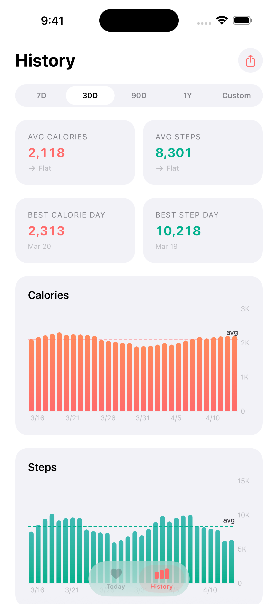
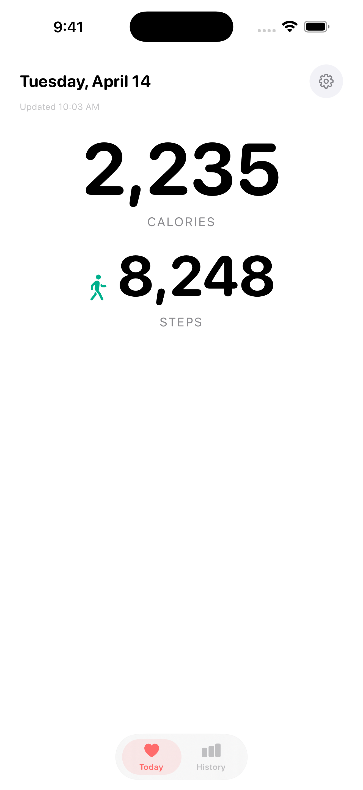
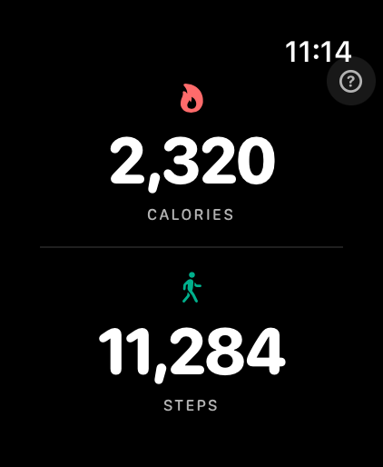
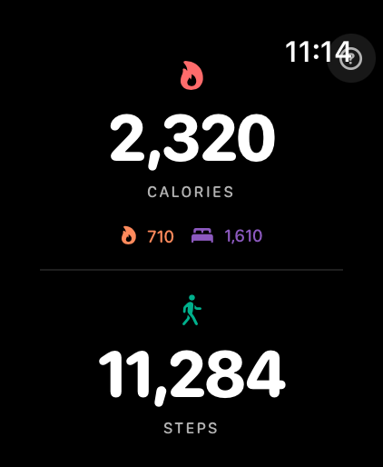

Vitals — Total Calories
A free, private calorie and step tracker for iPhone and Apple Watch. Built on HealthKit. No accounts. No servers. No analytics.





§ The pitch
Vitals is the calorie tracker I wanted on my own phone. Apple Health already knows what you ate (if you log it), how much you moved, and what your resting metabolism looks like — but the default Health app makes you tap through five screens to see the one number that matters: total burn vs. intake, today.
So Vitals just shows you that number. On the home screen. On the watch face. On the lock screen. With no account, no sync, no telemetry, and no email collection. It reads from HealthKit, does the math locally, and gets out of the way.
§ Specs
| Platforms | iOS 17+, watchOS 10+ |
|---|---|
| Language | Swift 6 (strict concurrency) |
| UI | SwiftUI, all targets |
| Data | HealthKit (read-only) |
| Widgets | WidgetKit · 3 home-screen sizes · Lock Screen · 3 watch complications |
| Project layout | 4 targets, generated by XcodeGen from project.yml |
| Distribution | App Store · TestFlight · open source on GitHub |
§ How it's built
The repo is four targets sharing a Shared/ module:
- Vitals — the iPhone app.
- VitalsWatch — a full watchOS app, not a forwarded view.
- VitalsWidget — home-screen + Lock Screen widgets.
- VitalsWatchWidget — circular, rectangular, corner, and inline complications.
All four read the same App Group container so the widgets can render without ever waking the host app, and the watch can show a sensible answer offline. HealthKitService is the only place that touches HK; everything else asks an in-process actor for the day's totals. Strict concurrency was a deliberate choice — it forced the right boundaries between the data layer, the snapshot store, and the UI on day one.
§ Decisions worth defending
No backend. Every other calorie app is the same: sign-up flow, food database licensing, cloud sync, an email digest, a paid tier. Vitals deliberately ships none of that. If your data is on your phone and Apple Health already has the numbers, the network isn't doing any work — so it's not in the build.
Free, with no upsell. No subscriptions, no IAP, no paywall behind the watch app. The cost of running it is zero, so the price is zero.
Open source. Privacy claims that aren't auditable aren't really privacy claims. The repo is public; the entitlements file shows exactly which HealthKit categories are requested.
The simplest thing that could possibly work, shipped on three Apple platforms and reviewed.